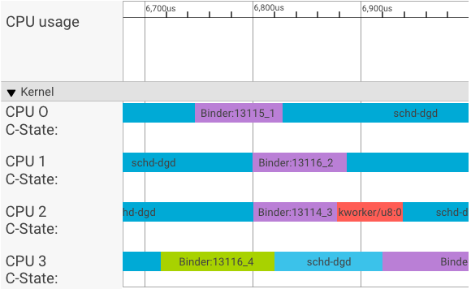
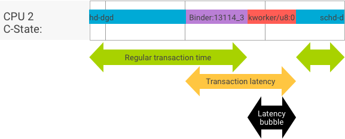

Android O includes binder and hwbinder performance tests for throughput and latency. While many scenarios exist for detecting perceptible performance problems, running such scenarios can be time consuming and results are often unavailable until after a system is integrated. Using the provided performance tests makes it easier to test during development, detect serious problems earlier, and improve user experience.
Performance tests include the following four categories:
system/libhwbinder/vts/performance/Benchmark_binder.cpp)frameworks/native/libs/binder/tests/schd-dbg.cpp)system/libhwbinder/vts/performance/Benchmark.cpp)system/libhwbinder/vts/performance/Latency.cpp)Binder and hwbinder are Android inter-process communication (IPC) infrastructures that share the same Linux driver but have the following qualitative differences:
| Aspect | binder | hwbinder |
|---|---|---|
| Purpose | Provide a general purpose IPC scheme for framework | Communicate with hardware |
| Property | Optimized for Android framework usage | Minimum overhead low latency |
| Change scheduling policy for foreground/background | Yes | No |
| Arguments passing | Uses serialization supported by Parcel object | Uses scatter buffers and avoids the overhead to copy data required for Parcel serialization |
| Priority inheritance | No | Yes |
A systrace visualizer displays transactions as follows:
In the above example:
In CPU 1, the OS kernel executes the client to issue the request. It then uses the same CPU whenever possible to wake up a server process, handle the request, and context switch back after the request is complete.
In a perfect transaction, where the client and server process switch seamlessly, throughput and latency tests do not produce substantially different messages. However, when the OS kernel is handling an interrupt request (IRQ) from hardware, waiting for locks, or simply choosing not to handle a message immediately, a latency bubble can form.
The throughput test generates a large number of transactions with different payload sizes, providing a good estimation for the regular transaction time (in best case scenarios) and the maximum throughput the binder can achieve.
In contrast, the latency test performs no actions on the payload to minimize the regular transaction time. We can use transaction time to estimate the binder overhead, make statistics for the worst case, and calculate the ratio of transactions whose latency meets a specified deadline.
A priority inversion occurs when a thread with higher priority is logically waiting for a thread with lower priority. Real-time (RT) applications have a priority inversion problem:

When using Linux Completely Fair Scheduler (CFS) scheduling, a thread always has a chance to run even when other threads have a higher priority. As a result, applications with CFS scheduling handle priority inversion as expected behavior and not as a problem. In cases where the Android framework needs RT scheduling to guarantee the privilege of high priority threads however, priority inversion must be resolved.
Example priority inversion during a binder transaction (RT thread is logically blocked by other CFS threads when waiting for a binder thread to service):
To avoid blockages, you can use priority inheritance to temporarily escalate the Binder thread to a RT thread when it services a request from a RT client. Keep in mind that RT scheduling has limited resources and should be used carefully. In a system with n CPUs, the maximum number of current RT threads is also n; additional RT threads might need to wait (and thus miss their deadlines) if all CPUs are taken by other RT threads.
To resolve all possible priority inversions, you could use priority inheritance for both binder and hwbinder. However, as binder is widely used across the system, enabling priority inheritance for binder transactions might spam the system with more RT threads than it can service.
The throughput test is run against binder/hwbinder transaction throughput. In a system that is not overloaded, latency bubbles are rare and their impact can be eliminated as long as the number of iterations is high enough.
system/libhwbinder/vts/performance/Benchmark_binder.cpp.system/libhwbinder/vts/performance/Benchmark.cpp.Example throughput test results for transactions using different payload sizes:
Benchmark Time CPU Iterations --------------------------------------------------------------------- BM_sendVec_binderize/4 70302 ns 32820 ns 21054 BM_sendVec_binderize/8 69974 ns 32700 ns 21296 BM_sendVec_binderize/16 70079 ns 32750 ns 21365 BM_sendVec_binderize/32 69907 ns 32686 ns 21310 BM_sendVec_binderize/64 70338 ns 32810 ns 21398 BM_sendVec_binderize/128 70012 ns 32768 ns 21377 BM_sendVec_binderize/256 69836 ns 32740 ns 21329 BM_sendVec_binderize/512 69986 ns 32830 ns 21296 BM_sendVec_binderize/1024 69714 ns 32757 ns 21319 BM_sendVec_binderize/2k 75002 ns 34520 ns 20305 BM_sendVec_binderize/4k 81955 ns 39116 ns 17895 BM_sendVec_binderize/8k 95316 ns 45710 ns 15350 BM_sendVec_binderize/16k 112751 ns 54417 ns 12679 BM_sendVec_binderize/32k 146642 ns 71339 ns 9901 BM_sendVec_binderize/64k 214796 ns 104665 ns 6495
For example, for an 8-byte payload:
BM_sendVec_binderize/8 69974 ns 32700 ns 21296
… the maximum throughput the binder can achieve is calculated as:
MAX throughput with 8-byte payload = (8 * 21296)/69974 ~= 2.423 b/ns ~= 2.268 Gb/s
To get results in .json, run the test with the
--benchmark_format=json argument:
libhwbinder_benchmark --benchmark_format=json
{
"context": {
"date": "2017-05-17 08:32:47",
"num_cpus": 4,
"mhz_per_cpu": 19,
"cpu_scaling_enabled": true,
"library_build_type": "release"
},
"benchmarks": [
{
"name": "BM_sendVec_binderize/4",
"iterations": 32342,
"real_time": 47809,
"cpu_time": 21906,
"time_unit": "ns"
},
….
}
The latency test measures the time it takes for the client to begin initializing the transaction, switch to the server process for handling, and receive the result. The test also looks for known bad scheduler behaviors that can negatively impact transaction latency, such as a scheduler that does not support priority inheritance or honor the sync flag.
frameworks/native/libs/binder/tests/schd-dbg.cpp.system/libhwbinder/vts/performance/Latency.cpp.Results (in .json) show statistics for average/best/worst latency and the number of deadlines missed.
Latency tests take the following options:
| Command | Description |
|---|---|
-i value |
Specify number of iterations. |
-pair value |
Specify the number of process pairs. |
-deadline_us 2500 |
Specify the deadline in us. |
-v |
Get verbose (debugging) output. |
-trace |
Halt the trace on a deadline hit. |
The following sections detail each option, describe usage, and provide example results.
Example with a large number of iterations and verbose output disabled:
libhwbinder_latency -i 5000 -pair 3
{
"cfg":{"pair":3,"iterations":5000,"deadline_us":2500},
"P0":{"SYNC":"GOOD","S":9352,"I":10000,"R":0.9352,
"other_ms":{ "avg":0.2 , "wst":2.8 , "bst":0.053, "miss":2, "meetR":0.9996},
"fifo_ms": { "avg":0.16, "wst":1.5 , "bst":0.067, "miss":0, "meetR":1}
},
"P1":{"SYNC":"GOOD","S":9334,"I":10000,"R":0.9334,
"other_ms":{ "avg":0.19, "wst":2.9 , "bst":0.055, "miss":2, "meetR":0.9996},
"fifo_ms": { "avg":0.16, "wst":3.1 , "bst":0.066, "miss":1, "meetR":0.9998}
},
"P2":{"SYNC":"GOOD","S":9369,"I":10000,"R":0.9369,
"other_ms":{ "avg":0.19, "wst":4.8 , "bst":0.055, "miss":6, "meetR":0.9988},
"fifo_ms": { "avg":0.15, "wst":1.8 , "bst":0.067, "miss":0, "meetR":1}
},
"inheritance": "PASS"
}
These test results show the following:
"pair":3"iterations": 5000"deadline_us":2500"I": 10000CFS other)RT-fifo)"S": 9352"R": 0.9352"other_ms":{ "avg":0.2 , "wst":2.8 , "bst":0.053, "miss":2,
"meetR":0.9996}avg), worst (wst), and the best
(bst) case for all transactions issued by a normal priority caller.
Two transactions miss the deadline, making the meet ratio
(meetR) 0.9996."fifo_ms": { "avg":0.16, "wst":1.5 , "bst":0.067, "miss":0,
"meetR":1}other_ms, but for transactions issued by client with
rt_fifo priority. It's likely (but not required) that the
fifo_ms has a better result than other_ms, with lower
avg and wst values and a higher meetR
(the difference can be even more significant with load in the background).Note: Background load may impact the throughput
result and the other_ms tuple in the latency test. Only the
fifo_ms may show similar results as long as the background load has
a lower priority than RT-fifo.
Each client process is paired with a server process dedicated for the client,
and each pair may be scheduled independently to any CPU. However, the CPU
migration should not happen during a transaction as long as the SYNC flag is
honor.
Ensure the system is not overloaded! While high latency in an overloaded
system is expected, test results for an overloaded system do not provide useful
information. To test a system with higher pressure, use -pair
#cpu-1 (or -pair #cpu with caution). Testing using
-pair n with n > #cpu overloads the
system and generates useless information.
After extensive user scenario testing (running the latency test on a qualified product), we determined that 2.5ms is the deadline to meet. For new applications with higher requirements (such as 1000 photos/second), this deadline value will change.
Using the -v option displays verbose output. Example:
libhwbinder_latency -i 1 -v-------------------------------------------------- service pid: 8674 tid: 8674 cpu: 1 SCHED_OTHER 0-------------------------------------------------- main pid: 8673 tid: 8673 cpu: 1 -------------------------------------------------- client pid: 8677 tid: 8677 cpu: 0 SCHED_OTHER 0-------------------------------------------------- fifo-caller pid: 8677 tid: 8678 cpu: 0 SCHED_FIFO 99 -------------------------------------------------- hwbinder pid: 8674 tid: 8676 cpu: 0 ??? 99-------------------------------------------------- other-caller pid: 8677 tid: 8677 cpu: 0 SCHED_OTHER 0 -------------------------------------------------- hwbinder pid: 8674 tid: 8676 cpu: 0 SCHED_OTHER 0
SCHED_OTHER priority and run in CPU:1 with pid
8674.fifo-caller. To service this transaction, the hwbinder upgrades the
priority of server (pid: 8674 tid: 8676) to be 99 and also marks it
with a transient scheduling class (printed as ???). The scheduler
then puts the server process in CPU:0 to run and syncs it with the
same CPU with its client.SCHED_OTHER priority. The server downgrades itself and services the
caller with SCHED_OTHER priority.You can specify the -trace option to debug latency issues. When
used, the latency test stops the tracelog recording at the moment when bad
latency is detected. Example:
atrace --async_start -b 8000 -c sched idle workq binder_driver sync freqlibhwbinder_latency -deadline_us 50000 -trace -i 50000 -pair 3deadline triggered: halt ∓ stop trace log:/sys/kernel/debug/tracing/trace
The following components can impact latency:
ioctl to config to the binder?DEBUG configs such as DEBUG_PREEMPT and
DEBUG_SPIN_LOCK?cpu-freq driver, cpu-idle driver,
cpu-hotplug, etc.) that impact the scheduler?